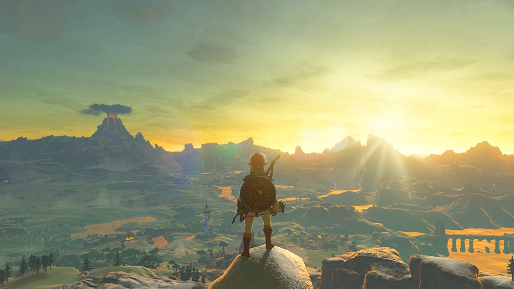

Link ADVENTURE

Plot
Breath of the Wild takes place at the end of the Zelda timeline in the kingdom of Hyrule.When the evil Calamity Ganon threatens Hyrule, he is defeated by Princess Zelda, descendant of the Goddess Hylia, with the help of her knight, Link.Hyrule matured into an advanced civilization, protected by four Divine Beasts— enormous animalistic machines— and an army of Guardians, autonomous weapons.Upon Ganon's return, four great warriors were given the title of Champion and piloted one of the Divine Beasts to weaken him, protected by Zelda, Link, and the Guardians. Link struck Ganon down with the Master Sword, allowing Zelda to seal Ganon away.
10,000 years later, the kingdom of Hyrule regressed to a medieval state. Reading their ancestors' prophecies, the Hyrulians recognized the signs of Ganon's return and excavated the Divine Beasts and Guardians. The champions of Hyrule's races—Daruk, warrior of the mountainous Goron; Mipha, princess of the aquatic Zora; Revali, archer of the birdlike Rito; and Urbosa, chief of the desert-dwelling Gerudo—assembled to pilot the Divine Beasts, while Zelda and Link battled Ganon. However, Ganon possessed the Guardians and Divine Beasts, turning them against Hyrule. King Rhoam and the Champions were killed, the castle town was destroyed, and Link was gravely wounded. Zelda took Link to safety, hid the Master Sword, and used her magic to trap Ganon in Hyrule Castle.
100 years later, an amnesiac Link awakens in Hyrule. He meets an old man, who reveals himself as the spirit of King Rhoam. Rhoam explains that Ganon, sealed in Hyrule Castle, has grown strong; he pleads for Link to defeat Ganon before he breaks free and destroys the world.
Link travels Hyrule, returning to locations from his past and regaining his memories. With the help of the Hyrulian races, he boards the four Divine Beasts and purges them of Ganon's monsters, releasing the spirits of Hyrule's former champions. After obtaining the Master Sword from the Lost Woods, Link enters Hyrule Castle and defeats Ganon with the help of the Divine Beasts and Zelda's Bow of Light. Zelda seals Ganon away, restoring peace and allowing the spirits of King Rhoam and the champions to depart. Sensing their presence, Link and Zelda smile fondly.If the player fulfills certain conditions, they unlock an alternative ending in which Zelda realizes that Hyrule must be rebuilt and that she and Link must begin the process themselves. As Link and Zelda survey Hyrule and embark to rebuild their world, the princess confides that she may no longer possess any supernatural power, yet still she is happy.